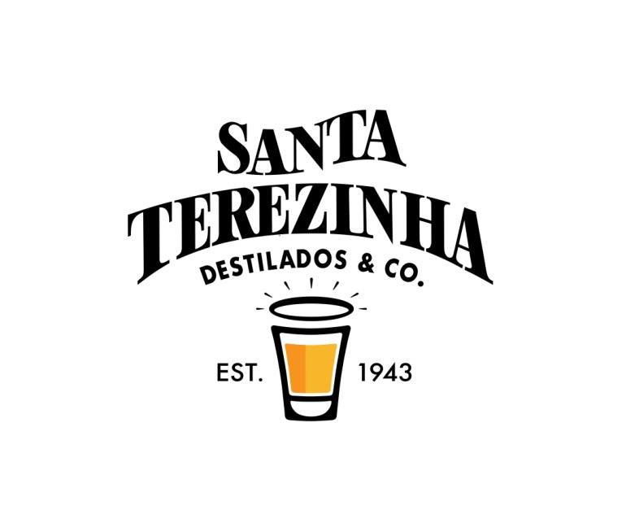

Antes da Marca, Existia uma Família
Em meio às montanhas da Serra Capixaba, nasceu uma tradição que atravessaria gerações...

Uma jornada que começou em 1943 e continua sendo escrita todos os dias.
Conheça Nossa HistóriaEm meio às montanhas da Serra Capixaba, nasceu uma tradição que atravessaria gerações...

Ao lado de Artemio Menegatti, Antonio Menegatti participou da construção dos primeiros passos da destilaria.

Hoje, Adwalter Menegatti e Igor Menegatti trabalham lado a lado...